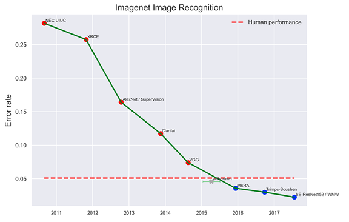

When improperly designed or deployed, machine learning methods can violate privacy, threaten safety, and perpetuate inequality and injustice. Stakeholders must be able to anticipate such risks and policy questions before they arise, rather than playing catch-up with the technology. To this end, it’s part of the responsibility of researchers, engineers, and developers in the field to help make information about their life-changing research widely available and understandable.
Once there is enough data collected for a given metric or problem, graphs displaying research progress, research techniques, data sets, and so on are generated.
My role on this project was a co-creator and a software engineer/data hacker. I gathered data from data sources (both manually and in an automated manner), read many academic papers to understand how AI/ML progress was measured and how scoring should be implemented, and implement and designed visualizations.
Press + Reactions
Wired article on the project: Do We Need a Speedometer for Artificial Intelligence
thanks @eff, so glad AI is being debated 👾👾 ethical and moral implications need to be carefully weighed 🔍 better with good data 📈📊🤓💕 https://t.co/mgQdL31Uro
— Chelsea E. Manning (@xychelsea) June 21, 2017
Measuring progress in AI is very hard to do. @EFF has aggregated all known quantifiable metrics of AI progress. https://t.co/5ZRf32lDKR
— Kevin Kelly (@kevin2kelly) July 31, 2017